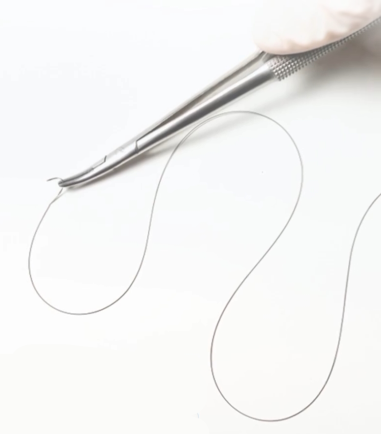

replace damaged areas
Needle with a flattened, spatula-like tip used for suturing delicate tissues.
Suture made from stainless steel, known for its strength and corrosion resistance.
Narrowing of a bodily passage or opening.
Methods to maintain a clean, infection-free environment during surgery.
Surgical incision into the sternum to access the heart or chest cavity.
Tissues layer beneath the skin that stores fat and provides insulation.
Needle used to pass suture material through tissues.
Instrument used to insert or remove sutures.
The maximum amount of stress a suture can withstand while being stretched.
Adhesives used to bond tissue surfaces together without sutures.
Facility where donated tissues are stored for medical use.
Technique to stretch and enlarge tissue, often used in reconstructive surgery.
Adequate blood flow to tissues to support their health and healing.
Minimally invasive procedure to replace aortic valve using a catheter.
Valve between the right atrium and right ventricle of the heart.
Instrument used to create an access point in minimally invasive surgery.
The ring-like structure supporting a heart valve.
The flap-like structure of a heart valve that regulates blood flow.
Surgical procedure to fix a malfunctioning heart valve.
Surgical procedure to bypass a damaged blood vessel or fix a weak spot.
Procedure to occlude or tie off blood vessels to stop bleeding.
Surgical removal of the vitreous gel from the eye.
The process of closing a wound to facilitate healing.
